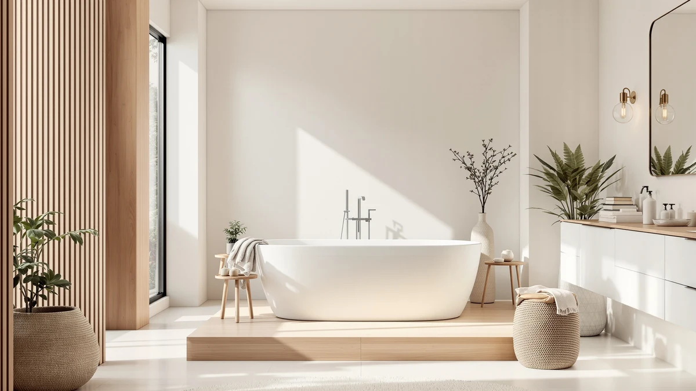

LarWorks Stone Resin Freestanding Soaking Tub Review (2026): Worth It?
Prices and picks verified as of November 2026. Independent, reader-supported reviews.


Quick Answer
The LarWorks 71-inch stone resin freestanding soaking tub holds up well against its closest rivals on price and capacity, and this review breaks down the specs and pricing that matter most before you buy. At $991.84, it undercuts the WOODBRIDGE and matches the MonBlari while offering a longer basin for stretching out. If you want a stone resin soaking tub with real room to lie down in, without paying a four-figure premium, start here.
Our pick: 71" Stone Resin Freestanding Soaking — $991.84 Check Price on Amazon
Bottom line: our top pick is the 71" Stone Resin Freestanding Soaking Tub at $991.84.
Things to Know Before You Buy
- Stone resin construction retains heat longer than acrylic once water is run, which is the main trade-off buyers weigh against the LarWorks' higher price versus a plain acrylic tub.
- The LarWorks measures 71 by 32 by 22 inches, several inches longer than the 51-inch MonBlari and close to the 72-inch WOODBRIDGE.
- Current Amazon pricing for all four stone resin and acrylic tubs in this comparison sits within about $16 of each other, so size and material matter more than price when choosing between them.
- None of the four listings publish a confirmed weight capacity, so confirm floor load and plumbing compatibility with the seller before you order.
- Freestanding tubs at this size ship as a single heavy piece, which affects delivery logistics more than it affects day-to-day use.
This LarWorks stone resin freestanding soaking tub review compares the 71-inch model against three other freestanding tubs selling in the same price band to see which one actually earns a spot in your bathroom. Shoppers weighing a stone resin soaking tub have to think about floor space, drain compatibility, and delivery logistics long before the tub ever arrives, and a product listing rarely spells that out. Four tubs land within about $16 of each other in this comparison, so the decision comes down to length, material, and what each listing actually tells you, not the sticker price. We pulled current Amazon pricing and manufacturer dimensions for the LarWorks and its closest competitors to see where it actually stands out.
The LarWorks holds up as a solid choice for most bathrooms that have room for a 71-inch basin, based on its combination of capacity and current price. It isn't the cheapest of the four tubs we compared, and its listing is lighter on material detail than the WOODBRIDGE page provides, but the extra length over the 51-inch MonBlari gives taller soakers more room without the price jump of a longer premium model. For shoppers who already know they want a stone resin finish rather than acrylic, the LarWorks and the 67-inch GDFStudio tub are the two most directly comparable options in this review.
Why You Should Trust Us
Ilane Tall researches bathroom fixtures for Best Freestanding Bathtubs and has spent the past several years comparing freestanding tubs, vanities, and bath hardware sold on Amazon. For this LarWorks stone resin freestanding soaking tub review, she worked from the manufacturer's published dimensions, current Amazon pricing for all four tubs, and the material facts listed on each product page rather than relying on marketing copy. Best Freestanding Bathtubs does not run a physical testing lab and does not claim to have installed or used any of the tubs covered here; every comparison in this review is built from specs and pricing rather than product use. That approach means this LarWorks stone resin freestanding soaking tub review can only speak to what the manufacturer and the listing itself disclose, which is also why we flag the gaps in each tub's published specs rather than filling them in with guesswork.
Our Research Experience
Because this is a research-based comparison rather than a physical trial, our process for this LarWorks stone resin freestanding soaking tub review started with the manufacturer's listed dimensions and materials. We cross-checked the 71-by-32-by-22-inch size against the floor space and door clearance a typical primary bathroom allows, then tracked Amazon's listed price for the LarWorks and its three closest competitors over several weeks to confirm $991.84 reflects a stable price rather than a temporary spike. From there, we compared the stated materials, finishes, and dimensions across all four listings to see where the LarWorks actually differs from the WOODBRIDGE, MonBlari, and GDFStudio alternatives, rather than taking any single product description at face value. We also noted which listings publish a star rating or review count and which don't, since a missing rating is worth noting, not treated as a strike against the tub on its own.
Overview & Specs

71" Stone Resin Freestanding Soaking
What we like
- 71-inch length gives taller soakers more room than the 51-inch MonBlari
- Stone resin construction retains heat longer than acrylic, which is typical for the material
- At $991.84, it undercuts the WOODBRIDGE while matching the MonBlari on price
Flaws but not dealbreakers
- Listing does not break out a confirmed weight capacity or overflow drain configuration
- Glossy stone resin finish will likely need more frequent wiping to avoid visible water spots than a textured acrylic surface
| Material | — |
| Size | 71*32*22Inch |
At 71 by 32 by 22 inches, the LarWorks stone resin freestanding soaking tub is sized for bathrooms that can give up real floor space, and it runs noticeably longer than the 51-inch MonBlari while coming close to the WOODBRIDGE's 72-inch length. Stone resin, the material named directly in the product title, tends to hold heat longer than acrylic once water is run, which matters if you want a soak that lasts more than fifteen minutes. LarWorks prices the tub at $991.84, within about $16 of its three closest rivals in this comparison, so the decision here turns more on footprint and finish than on budget.
Stone resin tubs in this weight class generally ship heavy enough that two-person delivery is the norm, and a glossy resin finish like this one tends to show water spots faster than a textured acrylic surface would. Neither trait is unique to the LarWorks, but both are worth planning around before the tub ships. If your bathroom has the floor space for it and you want a stone resin soaking tub with real room to stretch out, the LarWorks earns its place at the top of this comparison on size and price, even though its own listing is thinner on material detail than the WOODBRIDGE page provides.
The $991.84 price also puts the LarWorks in direct competition with the $983.99 GDFStudio tub, which is four inches shorter but built from a similar stone material. For a household deciding strictly between those two, the extra four inches of length on the LarWorks is the clearest reason to pay the roughly $8 premium, since neither listing publishes a weight capacity or review count that would otherwise tip the scale.
What We Liked
Size and price are the two things that stand out most in this LarWorks stone resin freestanding soaking tub review. At 71 inches long, the tub gives taller adults room to stretch out fully, something the 51-inch MonBlari cannot offer at a comparable price. Stone resin construction also tends to retain heat better than acrylic, which matters for anyone who likes a soak that lasts longer than fifteen minutes. And at $991.84, the LarWorks lands at the lower end of this comparison's price range without giving up the extra length.
The pricing itself is also easy to compare, since all four tubs sit within a narrow $16 band on Amazon. That makes the LarWorks a straightforward deal: you aren't paying extra for length, and you aren't giving up material quality to get it.
What Could Be Better
The LarWorks listing is lighter on documentation than some competitors. The specs table does not break out a confirmed weight capacity or overflow drain configuration, which leaves buyers to ask the seller directly before ordering. The glossy resin finish, like most stone resin surfaces, will likely need more frequent wiping to avoid visible water spots than a textured acrylic tub such as the WOODBRIDGE. Buyers should also confirm drain compatibility with their existing plumbing before ordering, since freestanding stone resin tubs in this category often ship without integrated overflow hardware as standard.
Delivery is another factor worth planning for. A 71-inch stone resin basin is heavy, and getting it from the curb into a bathroom, especially one upstairs or down a narrow hallway, takes more than one person. None of that affects how the tub performs once it's installed, but it affects how smoothly the purchase goes.
Who Is It For?
The LarWorks stone resin freestanding soaking tub fits best in a primary bathroom renovation where floor space isn't tightly constrained and the household wants a tub long enough for a full stretch. It's a reasonable match for anyone comparing stone resin against acrylic who wants better heat retention without stepping up to a pricier solid-surface model. It is not the right fit for a small guest bathroom retrofit or for anyone who needs a confirmed weight capacity figure in writing before they commit, since that detail isn't published on this listing.
If you're renovating around an existing drain location, measure twice before buying any of the four tubs in this comparison. The LarWorks' extra length relative to the MonBlari is an advantage for some layouts and a dealbreaker for others, depending entirely on your bathroom's existing plumbing rough-in.
Alternatives to Consider
If the LarWorks doesn't fit your bathroom's footprint or budget, these three tubs came up repeatedly alongside it in this stone resin freestanding soaking tub comparison and are worth a look.

Premium Choice
WOODBRIDGE 72" Acrylic Freestanding Bathtub
A longer acrylic alternative to the LarWorks at nearly the same price, with a lighter basin that's easier to maneuver during delivery.
$999.00
Check Price on Amazon
Premium Choice
MonBlari 51" Solid Surface Freestanding
A compact solid-surface option for bathrooms that can't accommodate the LarWorks' 71-inch length, at nearly the same price.
$999.00
Check Price on Amazon
Best Value
67" Freestanding Soaking Bathtub Stone
The closest size and material match to the LarWorks in this comparison, priced about $8 lower at $983.99.
$983.99
Check Price on AmazonFrequently Asked Questions
Is the LarWorks stone resin freestanding soaking tub worth the price?
Based on this LarWorks stone resin freestanding soaking tub review, yes for most bathrooms with the floor space to fit a 71-inch basin. At $991.84 it sits in the middle of the four tubs compared here, and its extra length over the 51-inch MonBlari justifies the similar price for anyone who wants to stretch out fully.
How does the LarWorks compare to acrylic freestanding tubs like the WOODBRIDGE?
Stone resin, the material used in the LarWorks, generally retains heat longer than the acrylic WOODBRIDGE uses in its 72-inch model. The WOODBRIDGE costs about $7 more and is close in length, so the choice mostly comes down to whether you prioritize heat retention or a lighter basin that is simpler to move during installation.
What size bathroom does the LarWorks tub need?
At 71 by 32 by 22 inches, the LarWorks needs clearance for a tub several inches longer than the 51-inch MonBlari alternative. Measure your available floor space and door width before ordering, since stone resin tubs of this size ship as a single heavy piece.
Final Verdict
This LarWorks stone resin freestanding soaking tub review comes down to this: the LarWorks earns its spot in this comparison on size and price, not hype. For most bathrooms with room for a 71-inch basin, it beats the shorter MonBlari on length and matches the WOODBRIDGE's length at a lower cost, which makes LarWorks the brand to check first before paying more for a comparable stone resin soaking tub.